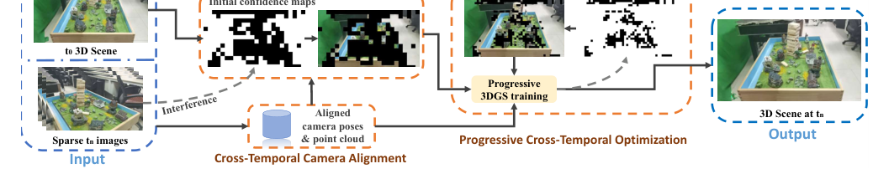
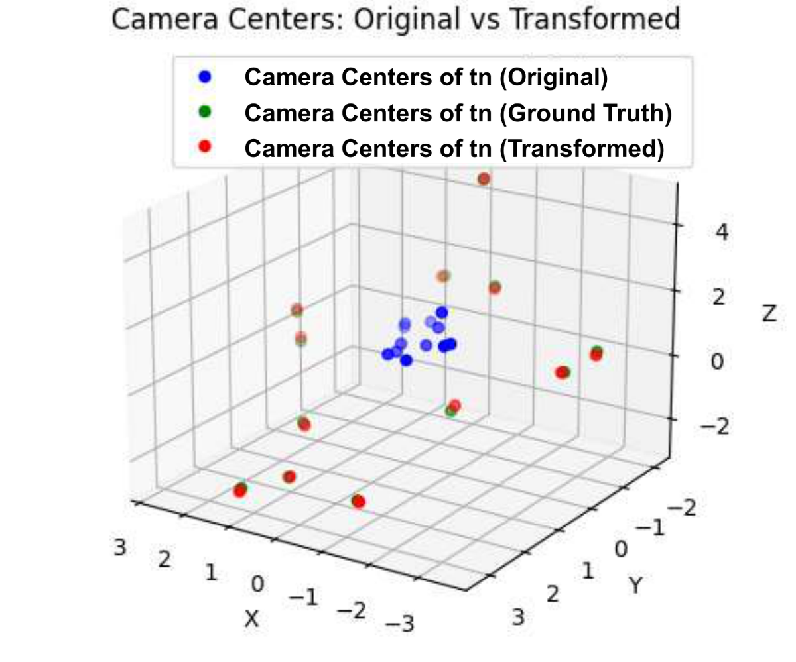
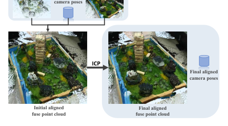
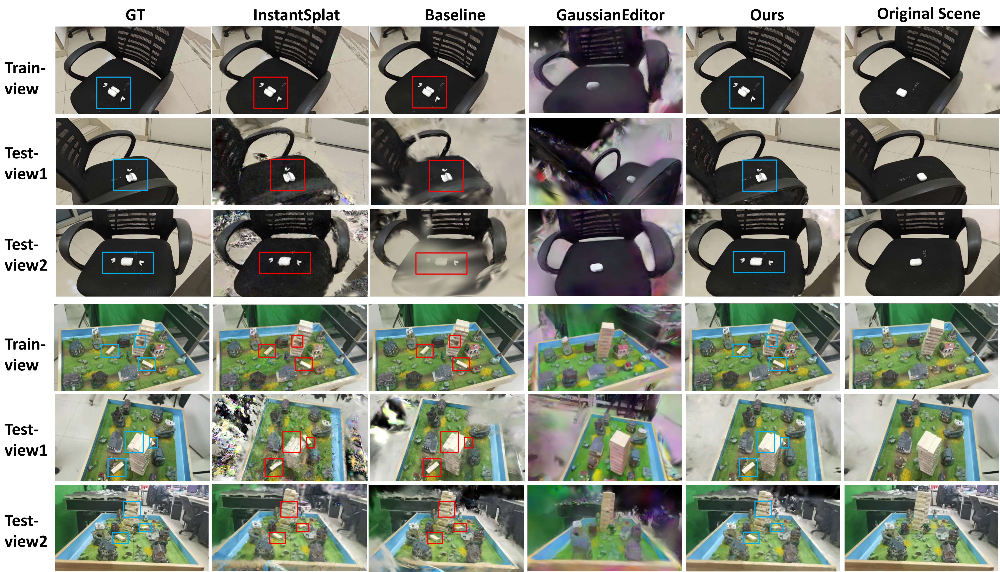

Cross-Temporal：用于稀疏视图引导场景更新的 3D 高斯泼溅
简单摘要
随着时间的推移保持一致的 3D 场景表示是计算机视觉领域的一项重大挑战。在本文中，我们提出了 Cross-Temporal 3D 高斯泼溅（Cross-Temporal 3DGS），这是一种用于跨不同时间段有效重建和更新 3D 场景的新颖框架。

随时间保持一致且可更新的 3D 场景表示是计算机视觉和图形领域的一个基本但尚未充分探索的挑战。为了应对这些挑战，我们提出了 Cross-Temporal 3D 高斯泼溅（Cross-Temporal 3DGS），这是一种新颖的框架，旨在使用稀疏视图和历史先验跨时间更新或恢复 3D 场景。
核心创新
论文真正新增的设计，首先体现在 在本文中，我们提出了 Cross-Temporal 3D 高斯泼溅（Cross-Temporal 3DGS），这是一种使用稀疏图像和先前捕获的场景先验有效重建和更新不同时间段的 3D 场景的新颖框架。这一步不是换个说法重复问题定义，而是直接改动了方法主线的切入点。
进一步看，如图所示，我们的方法通过三个关键创新解决了这些差距。作者这样安排，是为了让前面的表示、约束或训练信号继续影响后面的求解链路。
进一步看，为了确保独立捕获的时间戳之间的几何一致性，我们提出了一种跨时间相机对齐策略，该策略可以跨时间重建和注册场景结构，为后续优化提供统一的坐标。作者这样安排，是为了让前面的表示、约束或训练信号继续影响后面的求解链路。
进一步看，直接从 到 转移先前的场景信息而不解决这种不对准会引入几何不一致和投影误差，最终降低重建质量。作者这样安排，是为了让前面的表示、约束或训练信号继续影响后面的求解链路。
进一步看，我们的方法首先逐步激活高置信度区域，然后迭代置信度扩展，这允许在后期阶段优化低置信度区域。作者这样安排，是为了让前面的表示、约束或训练信号继续影响后面的求解链路。
技术细节
此外，当前基于 3DGS 的动态场景重建方法通常假设时间连续性和相机一致性，需要大量的训练时间。为了确保独立捕获的时间戳之间的几何一致性，我们提出了一种跨时间相机对齐策略，可以跨时间重建和注册场景结构。作者这样设计，是为了把这一节的输入、约束和输出关系讲清楚。
基于这个原理，我们估计每个区域的置信值并构建置信图。在稀疏视图条件下，3DGS 通常缺乏足够的约束，导致出现浮动伪影和针状结构。我们的方法首先逐步激活高置信度区域，然后迭代置信度扩展，从而允许在后期阶段优化低置信度区域。这一步的作用，是把当前结果继续传给后面的模块或训练目标。
3 方法论
此外，当前基于 3DGS 的动态场景重建方法通常假设时间连续性和相机一致性，需要大量的训练时间。逐步将高质量场景先验集成到 3DGS 重建过程中，提高保真度和计算效率。作者这样设计，是为了把这一节的输入、约束和输出关系讲清楚。
3.1 跨颞叶相机对齐
为了确保独立捕获的时间戳之间的几何一致性，我们提出了一种跨时间相机对齐策略，可以跨时间重建和注册场景结构。直接从 到 转移先前的场景信息而不解决这种不对准会引入几何不一致和投影误差，最终降低重建质量。我们估计相机姿态并使用 DUSt3R 生成密集点云，因为密集点云对稀疏视图重建显示出积极的影响。作者这样设计，是为了把这一节的输入、约束和输出关系讲清楚。


$$ P_{\text{fused}} = P_c \cup P_n^{\text{aligned}}. $$
放在“方法论”这一部分看，这条式子重点不是孤立地罗列符号，而是交代 P fused 如何承接前面的输入并把结果交给后续步骤。
3.2 基于干扰的置信度初始化
围绕 3.2 基于干扰的置信度初始化，我们的核心见解是，当相对稳定的区域的高斯参数受到由视图引导的受控扰动时，相对稳定的区域应该表现出最小的渲染质量下降。基于这个原理，我们估计每个区域的置信值并构建置信图。我们使用从 重建的 3D 高斯模型来启动该过程。作者这样设计，是为了把这一节的输入、约束和输出关系讲清楚。
3.3 渐进式跨时间优化
在稀疏视图条件下，3DGS 通常缺乏足够的约束，导致出现浮动伪影和针状结构。我们的方法首先逐步激活高置信度区域，然后迭代置信度扩展，从而允许在后期阶段优化低置信度区域。这种方法通过逐步整合几何先验来确保更稳定的重建。作者这样设计，是为了把这一节的输入、约束和输出关系讲清楚。
3.3.1 稀疏观察的初步训练
使用 ，我们在 处初始化 3DGS 模型，并利用 中的稀疏视图图像和 中的高置信度区域进行初步优化。损失函数将光度一致性与置信加权正则化结合起来。这里， 是渲染图像在像素 处的颜色，而 是指来自目标时间戳 处的像素处的地面真实颜色。作者这样设计，是为了把这一节的输入、约束和输出关系讲清楚。
$$ \begin{aligned} L_{\text{init}} = \sum_{p} c_p \Bigg[ &\sum_{k \in p} \| I_k^{\text{render}} - I_k^{t_n} \|_1 \\ &+ ( 1 - \text{SSIM}(I_p^{\text{render}}, I_p^{t_n}) ) \Bigg], \end{aligned} $$
这条式子是在定义一个可直接计算的中间量：右侧把相对位置、方向、权重或比例关系组合起来，左侧则把这个组合结果记成后续模块要反复使用的变量。
3.3.2 迭代置信度扩展
为了细化置信度图并扩展可靠区域，我们利用了 3DGS 通常在训练视点附近渲染更高质量图像的观察结果。对于 中的每个视点，我们使用当前模型进行渲染，并根据地面实况图像 计算细粒度的相似度得分。完整的管道实现了静态区域的几何一致性，同时在稀疏条件下恢复动态区域的精细细节。作者这样设计，是为了把这一节的输入、约束和输出关系讲清楚。
$$ C_{\text{iter}}^i(p) = \begin{cases} 1 & \text{if \;} mSSIM(p) \geq \tau_{\text{iter}} \\ 0 & \text{otherwise}. \end{cases} $$
放在“方法论”这一部分看，这条式子是在把 这一项中间量 写成可直接计算的形式。它用分段规则来定义 这一项中间量 在不同条件下该取什么值，这样后续决策或推理过程就能按场景切换计算路径。
实验结论
我们将我们的方法与三个基线进行比较。原始的 3DGS 方法、基于 3DGS 的稀疏视图重建方法 InstantSplat 和最新的场景编辑框架。这种比较凸显了基于编辑的方法在实现几何一致和时间精确更新方面的局限性。
我们报告 PSNR 、 SSIM 和 LPIPS 的图像指标，涵盖图像质量的不同方面进行评估。特别是，与标准 3DGS 基线相比，我们的方法实现了超过 7 dB 的 PSNR 改进，并且在感知相似性 (LPIPS) 和结构一致性 (SSIM) 方面也取得了显着的进步。虽然 InstantSplat 在极度稀疏的情况下实现了更快的渲染和可接受的质量，但其在以保真度为导向的指标中的性能明显较低，这表明需要权衡。
| Method | PSNR | SSIM | LPIPS | Time/s |
|---|---|---|---|---|
| Baseline | 15.87 | 0.683 | 0.447 | 160.55 |
| Instant-Splat | 16.18 | 0.580 | 0.534 | 405.66 |
| GS-Editor | 12.16 | 0.554 | 0.714 | 501.60 |
| Ours | 23.89 | 0.8641 | 0.2394 | 310.00 |

4.1 定量比较
我们的方法在三个质量指标上显着优于所有基线。特别是，与标准 3DGS 基线相比，我们的方法实现了超过 7 dB 的 PSNR 改进，并且在感知相似性 (LPIPS) 和结构一致性 (SSIM) 方面也取得了显着的进步。虽然 InstantSplat 在极度稀疏的情况下实现了更快的渲染和可接受的质量，但其在以保真度为导向的指标中的性能明显较低，这表明速度和重建精度之间存在权衡。
4.2 定性比较
该图显示了四种方法比较的定性结果。InstantSplat 实现了快速重建，但存在几何粗糙和细节不完整的问题，尤其是在遮挡或更新的区域。相比之下，我们的方法实现了卓越的结构完整性和时间一致性。
4.3 消融研究
为了评估我们的相机对齐策略的影响，我们执行了两种消融变体。如表所示，完整方法在所有指标上始终优于两种消融方法。与 消融 3 相比，我们的方法将 PSNR 提高了 4.5 dB，并实现了更好的结构相似性和感知质量。
| Method | PSNR | SSIM | LPIPS |
|---|---|---|---|
| Ablation 1 | 23.67 | 0.860 | 0.258 |
| Ablation 2 | 21.84 | 0.808 | 0.324 |
| Ours | 23.89 | 0.864 | 0.239 |
| Method | PSNR | SSIM | LPIPS | Time/s |
|---|---|---|---|---|
| Ablation 3 | 19.38 | 0.759 | 0.342 | 370.18 |
| Ablation 4 | 21.79 | 0.814 | 0.291 | 271.25 |
| Ours | 23.89 | 0.864 | 0.239 | 310.00 |
| Views | Layout | PSNR | SSIM | LPIPS |
|---|---|---|---|---|
| 4 | Concentrated | 23.26 | 0.854 | 0.263 |
| Uniform | 23.32 | 0.855 | 0.262 | |
| 6 | Concentrated | 23.55 | 0.853 | 0.263 |
| Uniform | 23.56 | 0.860 | 0.251 | |
| 8 | Concentrated | 23.79 | 0.859 | 0.263 |
| Uniform | 23.89 | 0.864 | 0.239 |
理解评价
如果把这篇论文放回问题背景里看，它真正的价值在于：随着时间的推移保持一致的 3D 场景表示是计算机视觉领域的一项重大挑战。这说明作者不是只补一个局部模块，而是在重新组织问题该怎样被解决。
当然，它离真正成熟的方案还有距离：当前方案的局限在于它仍然受制于计算资源、输入质量或场景复杂度，距离真正稳健的大规模部署还有差距。后续更值得继续推进的方向，是 未来继续提升效率、泛化能力以及在更复杂场景下的稳定性。